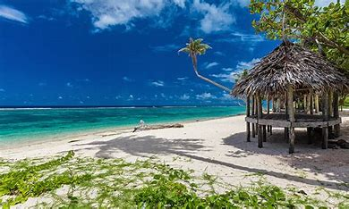
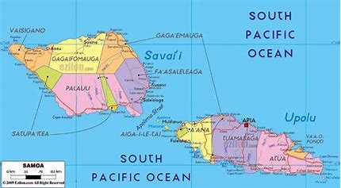

Western Samoa
According to legend, Samoa is known as the “Cradle of
Polynesia” because Savai‘i island is said to be Hawaiki,
the Polynesian homeland. Samoan culture is undoubtedly
central to Polynesian life, and its styles of music,
dance, and visual art have gained renown throughout the
Pacific islands and the world. The country’s international
image is that of a tropical paradise inhabited by
tourist-friendly flower-wreathed peoples. Yet this belies
the economic, social, and political challenges of this
diverse and evolving Pacific microstate. Samoa gained its
independence from New Zealand in 1962 after more than a
century of foreign influence and domination, but it
remains a member of the Commonwealth. The country was
known as Western Samoa until 1997. Its capital and main
commercial centre is Apia, on the island of Upolu.

Samoans are mainly of Polynesian heritage, and about
nine-tenths of the population are ethnic Samoans.
Euronesians (people of mixed European and Polynesian
ancestry) account for most of the rest of the population,
and a tiny fraction are of wholly European heritage.
Samoa lies south of the equator, about halfway between
Hawaii and New Zealand, in the Polynesian region of the
Pacific Ocean. The total land area is 2,842 km2 (1,097 sq
mi),[83] consisting of the two large islands of Upolu and
Savai'i (which together account for 99% of the total land
area) and eight small islets. The islets are:[84] the
three islets in the Apolima Strait (Manono Island, Apolima
and Nu'ulopa) the four Aleipata Islands off the eastern
end of Upolu (Nu'utele, Nu'ulua, Namua, and Fanuatapu)
Nu'usafe'e, which is less than 1 ha (2+1⁄2 acres) in area
and lies about 1.4 km (0.87 mi) off the south coast of
Upolu at the village of Vaovai The main island of Upolu is
home to nearly three-quarters of Samoa's population, and
to the capital city, Apia.
